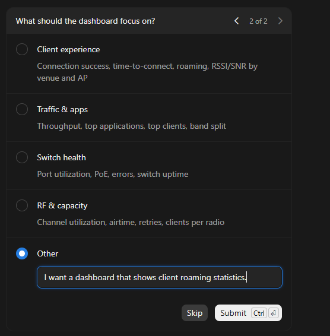

R1 Dash Master
By Alek Murray
Build importable Data Studio dashboards for RUCKUS One and RUCKUS AI from a simple declarative spec via MCP server.
Setup & usage in Claude Deskto here https://youtu.be/-gU7yu6liOw
Key features
- Pure offline generation — no API credentials needed.
- Output is a .zip you import via Data Studio → Settings → Import Dashboard.
- Build a Dashboard for R1 or Smartzone/AI
- Very fast! Build an entire custom dashboard faster than you can build a single chart.
- No learning curve required Data Studio is Apache Superset on an Apache Druid backend. This tool encodes the dataset catalogs and the chart/query grammar so you can build valid dashboards without learning Superset internals or guessing field names.
Featured in The RUCKUS Vibe, November 2026.